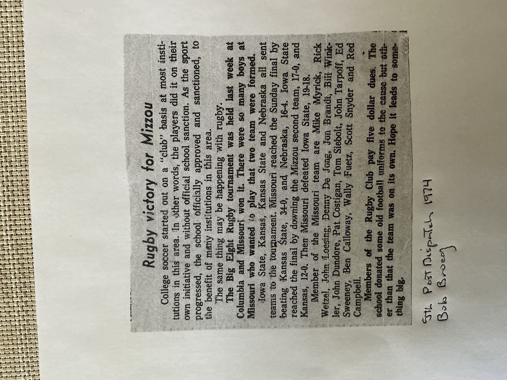
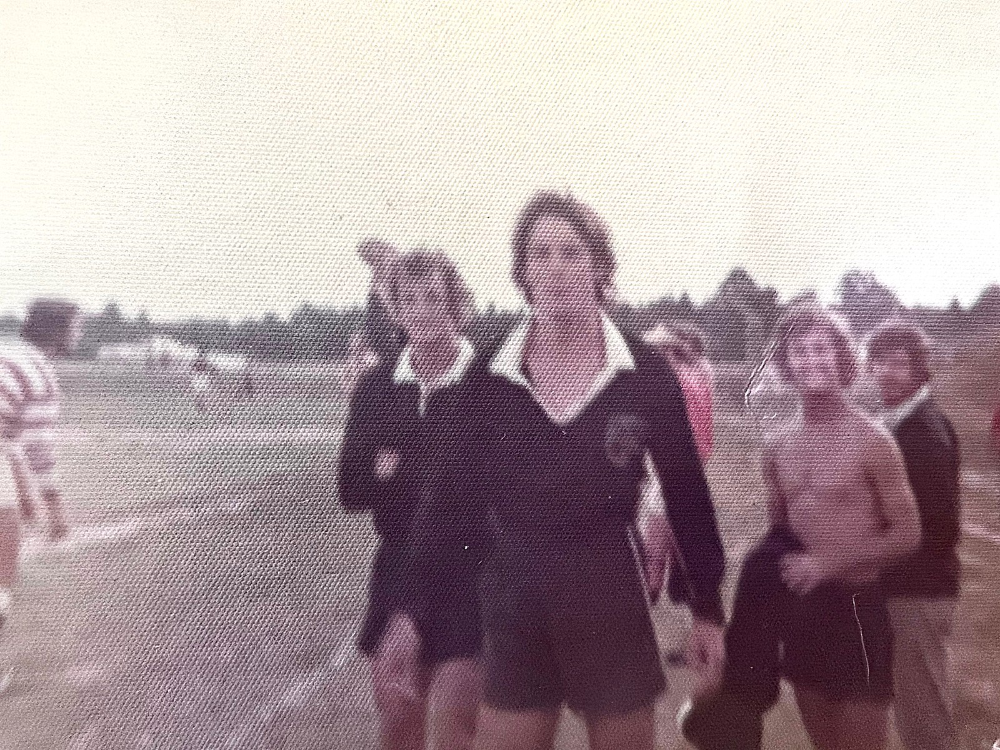
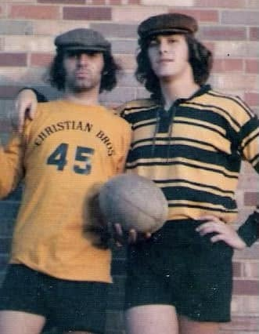
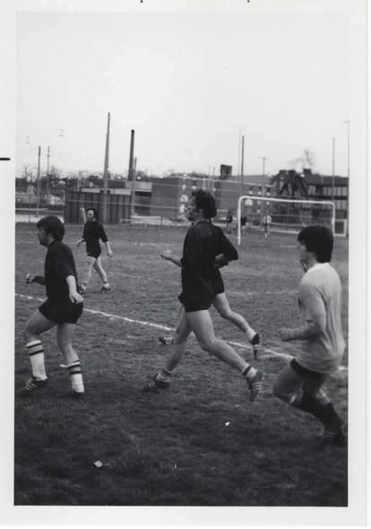
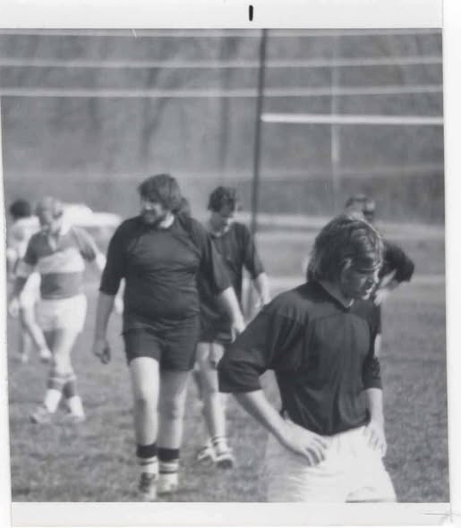
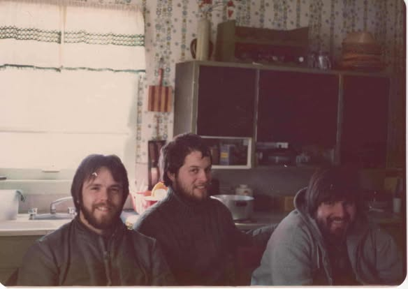

Photographs and Clippings from the Archive
Bob Broeg's St. Louis Post-Dispatch column on the 1974 Big Eight title, kept in the club scrapbook.

College soccer started out on a “club” basis at most institutions in this area. In other words, the players did it on their own initiative and without official school sanction. As the sport progressed, the school officially approved and sanctioned, to the benefit of many institutions in this area.
The same thing may be happening with rugby.
The Big Eight Rugby tournament was held last week at Columbia and Missouri won it. There were so many boys at Missouri who wanted to play that two team were formed.
Iowa State, Kansas, Kansas State and Nebraska all sent teams to the tournament. Missouri reached the Sunday final by beating Kansas State, 34-0, and Nebraska, 16-4. Iowa State reached the final by downing the Mizzou second team, 17-0, and Kansas, 12-0. Then Missouri defeated Iowa State, 19-18.
Member of the Missouri team are Mike Myrick, Rick Wetzel, John Loesing, Denny De Jong, Jon Brandt, Bill Winkler, John Dundore, Pat Costigan, Tom Siebolt, John Tarpoff, Ed Sweeney, Ben Calloway, Wally Fuetz, Scott Snyder and Red Campbell.
Members of the Rugby Club pay five dollar dues. The school donated some old football uniforms to the cause but other than that the team was on its own. Hope it leads to something big.
Transcribed word for word from the clipping, including the original's “two team were formed” and “Member of the Missouri team are.” One correction: the Post-Dispatch set Wally Feutz's surname as “Fuetz” — the roster spelling is the right one. The full account of the season is on the 1973 season page.
A color snapshot that came with the same batch, with nothing written on the back.

A photograph shared to the Mizzou Rugby Old Boys group by the man in it.

Photographs the board dated in August 2026.



Photos, programs, clippings, scorebooks — we want to see them.
The Big Eight championship season is one of the best documented in the club's history, and it still has gaps. Anything you have helps.
Share Your Photos